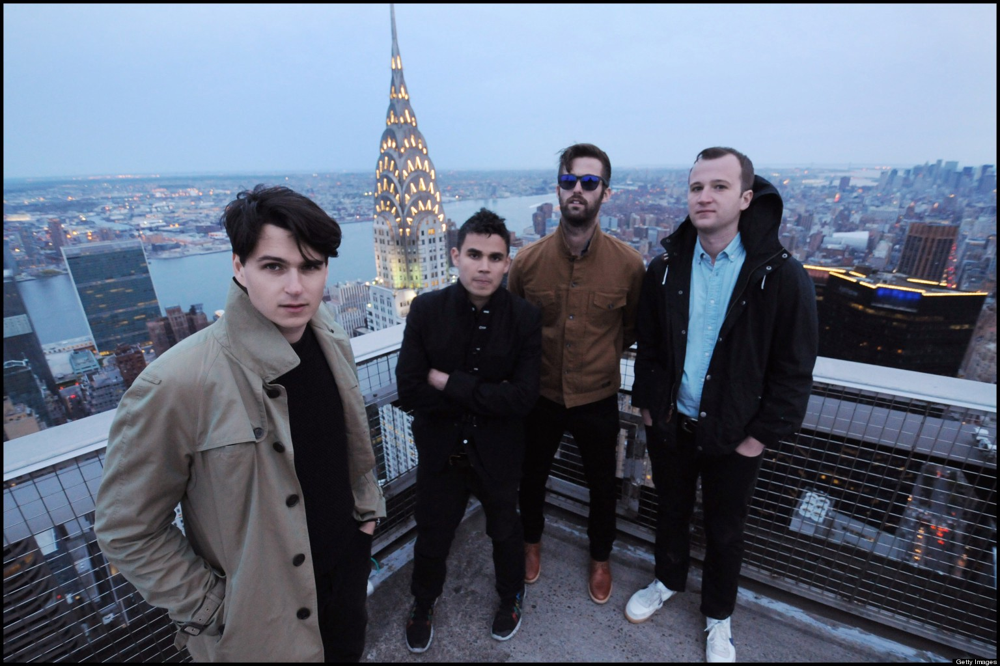
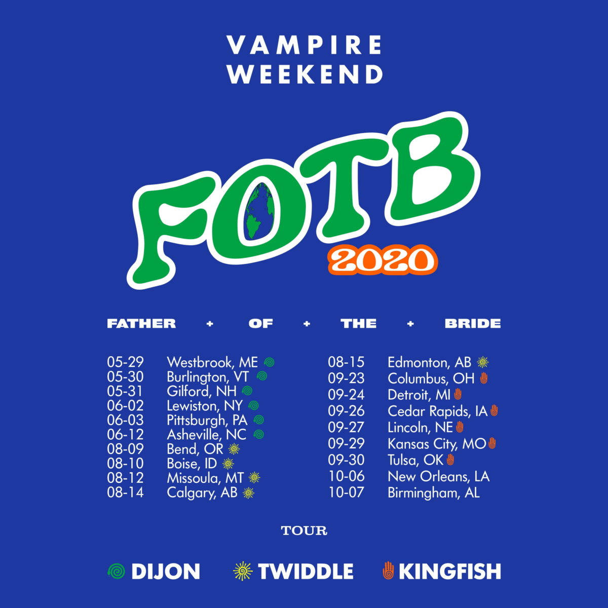

소개
뱀파이어 위켄드(Vampire Weekend)는 미국 콜롬비아 대학교 재학생 4명이 2006년에 결성하여, 현재 콜롬비아 레코드와 계약중인 뉴욕 출신의 미국 인디락 밴드입니다.
결성 멤버는 리드 보컬 및 기타리스트 에즈라 케닉(Ezra Koenig), 기타 및 키보드 담당 로스담(Rostam Batmanglij), 드럼 담당 크리스 톰슨(Chris Tomson) 과 베이스 크리스 배오(Chris Baio)입니다.
2014년에 3집을 끝으로 프로듀서 및 기타와 키보드를 맡았던 로스담이 탈퇴하면서, 현재는 3명이 소속하고 있으나, 보컬 에즈라 케닉이 작곡, 작사, 프로듀스 등 음악의 대부분을 다루고 있습니다.
에즈라는 현재 애플 뮤직에서 격주로 진행하는 Time Crisis with Ezra Koenig이라는 프로그램을 진행을 담당하며, 라디오DJ 로서도 활발히 활동하고 있습니다.
| 이름 | 담당 | 출신 |
| 에즈라 케닉 | 리드보컬,기타 | 뉴욕 |
| 로스담 | 기타, 키보드 | 뉴욕 |
| 크리스 톰슨 | 드럼 | 뉴욕 |
| 크리스 배오 | 베이스 | 뉴욕 |

그들의 음악은 인디락 장르로 분류됩니다. 클래식 락, 펑크 락, 힙합, 아프리카 음악 등 여러 장르의 음악을 사랑하는 에즈라의 독특한 감성은, 그의 음악에서도 잘 드러납니다.
최근 발매된 4집 Father of the Bride중 2021이라는 곡은 무인양품의 스토어 사운드트랙인 하루미 호소노의 꽃에 물을(花に水) 을 샘플링하여 화제가 되기도 했습니다.
다른 아티스트들에서 찾아보기 힘든 신선한 음악관을 가지고 있어, 앞으로는 또 어떤 개성있는 샘플링 음악을 세상에 내놓을지 기대가 됩니다.
앨범
투어 예정
아래 사진을 클릭하면 티켓판매처로 넘어갑니다.
